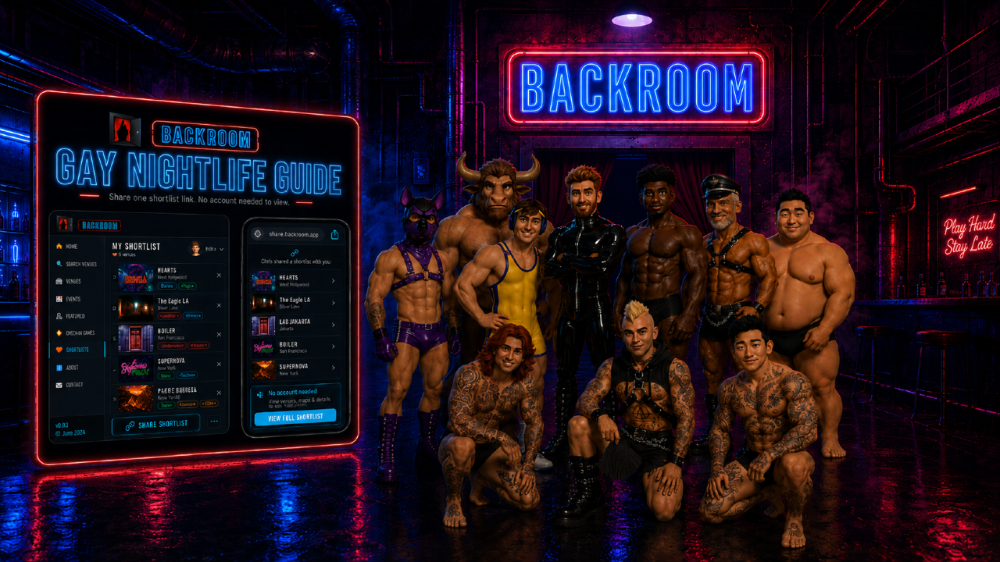

SOPSCOUT
AI ADOPTION / CREATIVE DIRECTION / INTERACTIVE EXPERIENCE
SOPScout is an internal AI-enabled operational assistant developed for Zalando Operations. I designed the launch and adoption experience around the tool, with the goal of making AI feel practical, approachable and relevant to everyday operational work.
I created the visual identity and mascot, launch presentation, internal communications and access materials, alongside a playable browser-based engagement game. The experience explained the tool’s value, use cases and guardrails while giving users a memorable way to discover and engage with it.
The project demonstrates how I combine AI enablement, visual communication, interactive content and structured rollout thinking — translating a technical tool into an experience that non-technical users can understand and adopt.
